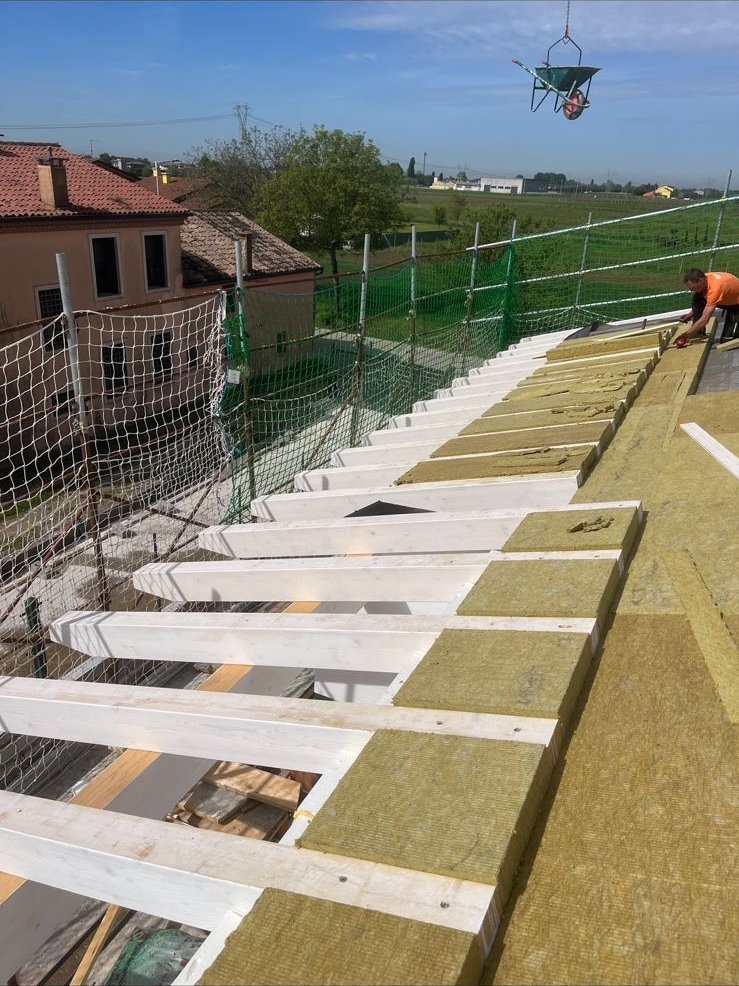
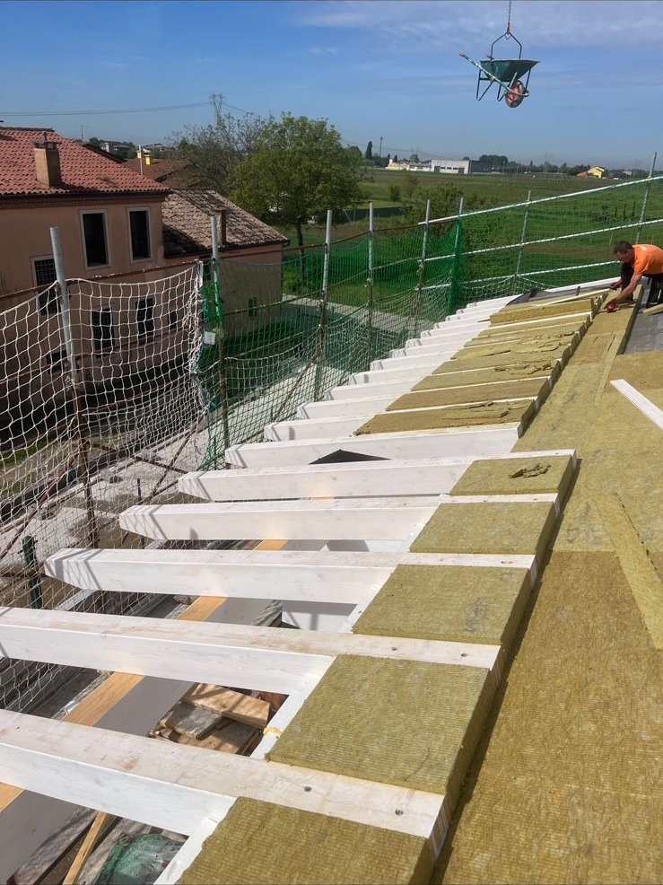

Contenuti della pagina
> RIGUARDO AL NUOVO
> LA MANUTENZIONE
> LATTONERIA
> LE OPERE INTERNE
> LUCERNARI
> RIFACIMENTO TETTI
Riguardo al nuovo
I servizi che offriamo riguardo al nuovo consistono in fornitura e posa della copertura.


La manutenzione
A proposito della manutenzione interveniamo su tetti vecchi in caso di perdite idriche o di coppi
pericolanti, cambiamo a richiesta le travi e perline che siano in gronda o interne
all'edificio.
Ci occupiamo del rifacimento del tetto, della posa di guaine e isolanti quali lana di roccia e
lana di
legno.
Togliamo il vecchio per ridarvi il nuovo.

 

Lattoneria
Il nostro compito e servizio è finire la copertura con la lattoneria che forniamo e posiamo in
maniera indipendente.
Ci occupiamo di camini, sfiati e tetti in lamiera.


Le opere interne
Abbelliamo l'ambiente interno con strutture e pannelli a seconda della vostra esigenza.


Lucernari
Nei nostri lavori è presente Velux che forniamo, posiamo e ne curiamo la manutenzione su richiesta. Installiamo della gamma di articoli dell'azienda la tapparella motorizzata e la tendina interna.

Rifacimento tetti
Ci occupiamo del completo rifacimento dei tetti.